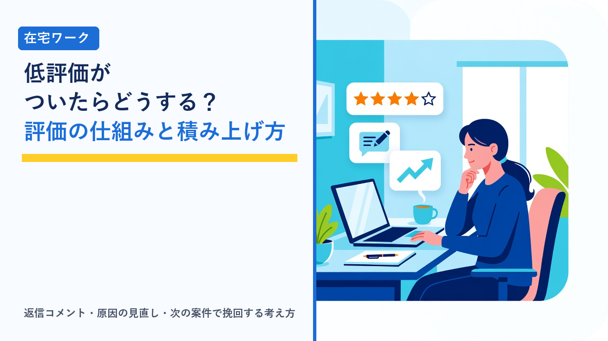

在宅ワークの評価・レビューの仕組み：低評価がついたときの対処と評価を積み上げる考え方
2026-11-07 更新

クラウドソーシングや在宅ワークのサイトでは、案件が終わるごとに発注者と受注者が互いを評価する仕組みが用意されています。この評価は次の案件に応募するときの判断材料として発注者に見られるため、評価の平均点や件数は、在宅ワーカーにとって「名刺」のような役割を持ちます。一方で、どれだけ丁寧に仕事をしていても、認識のずれや相性によって低評価がつくことはあり、そのときに感情的に対応してしまうと状況を悪化させることもあります。この記事では、評価・レビューがどのような仕組みで動いているか、低評価がついたときに取れる対応の選択肢、評価を安定して積み上げるための考え方を、客観的な情報として整理します。
評価・レビューの仕組み：いつ・何が・誰に見えるか
サイトによって細かな違いはありますが、一般的なクラウドソーシングサイトの評価は、次のような流れでつきます。
- 納品物の検収が完了し、契約が終了する：報酬の支払いが確定したタイミングで、双方に評価の入力が求められます。
- 発注者と受注者がそれぞれ評価を入力する：5段階などの点数と、任意のコメントを入力します。多くのサイトでは、相手の評価内容を見る前に自分の評価を入力する「相互評価」の形式が採られています。
- 双方の入力が揃うか、入力期限が過ぎると公開される：公開後は受注者のプロフィールページに表示され、応募先の発注者が閲覧できます。
評価の項目は点数だけでなく、「納期の遵守」「コミュニケーション」「成果物の品質」「スキル」のように複数の観点に分かれているサイトもあります。また、評価とは別に「契約の完了率（途中で契約が終了した割合）」や「本人確認の有無」「スキルテストの結果」が表示されることも多く、発注者はこれらを合わせて見ています。評価一覧のうち、発注者が特に見ているとされる点を整理します。
| 発注者が見る項目 | 見られ方 | 受注者側で意識したいこと |
|---|---|---|
| 評価の平均点 | 一覧で最初に目に入る。満点近くが多いサイトでは、わずかな差でも比較される | 1件ごとの低評価の影響は、総件数が少ないほど大きい |
| 評価の件数 | 平均点の信頼性の裏付け。件数が多いほど「安定して仕事をしている人」と見られる | 単発より継続案件のほうが件数が積み上がりやすい |
| 直近の評価 | 古い評価より最近の数件が重視される傾向。直近に低評価が並ぶと警戒される | 低評価が1件ついても、その後に高評価を重ねれば印象は回復しやすい |
| コメントの内容 | 「納期どおり」「指示を正確に反映」「連絡が丁寧」など、具体的な記述が信頼につながる | 発注者がコメントを書きやすいよう、納品時に作業内容の要約を添える |
| 低評価への返信 | 低評価そのものより「どう対応したか」が見られる。感情的な反論はマイナスになりやすい | 事実に基づき、短く冷静に。次項で詳しく解説 |
| 契約の完了率・途中終了の件数 | 途中で契約が終了した件数が多いと、「最後まで仕事をしない人」と見られる | 受けられない案件は契約前に断る。契約後の辞退は最小限に |
実績がまだ少ない時期の評価の積み方は在宅ワークの「実績ゼロ」期間の乗り越え方で、プロフィール欄の整え方はクラウドソーシングのプロフィール・提案文の書き方で、それぞれ整理しています。
低評価がつきやすい原因の分類
低評価の原因は、大きく「受注者側に改善できる余地があるもの」と「受注者側だけでは防ぎにくいもの」に分けて考えると、対応が整理しやすくなります。
- 納期の遅れ・連絡の遅れ：最も評価に直結しやすい原因です。遅れそうなときの事前連絡がなかった場合は、遅れの程度にかかわらず低評価になりやすいとされています。
- 指示と納品物のずれ：文字数・形式・ファイル名・トーンなど、募集内容や指示書にあった条件を満たしていないケースです。確認不足で起きることが多く、着手前の質問で防げる部分でもあります。
- 品質の認識の違い：発注者が期待していた水準と、受注者が「十分」と考えた水準にずれがあるケースです。サンプルの提示や、途中段階での確認で差を小さくできます。
- やり取りの印象：返信が短すぎる、質問に答えていない、修正依頼への反応が否定的に見えた、といったコミュニケーション面の要因です。内容が正しくても印象で評価が下がることがあります。
- 発注者側の事情：指示が曖昧だった、発注者の都合で仕様が変わった、発注者が評価の操作を習慣にしている、といった受注者だけでは防ぎにくいケースもあります。
納期と連絡の具体的な目安は在宅ワークの納期管理と遅れそうなときの連絡で詳しく解説しています。
低評価がついたときに取れる対応の比較
低評価がついた直後は、落ち込んだり反論したくなったりしますが、まず「事実として何が起きたか」と「評価一覧を見る次の発注者にどう見えるか」の2点に分けて考えると、取るべき対応が見えやすくなります。一般的に取れる選択肢を比較します。
| 対応 | 内容 | 向いているケース | 注意点 |
|---|---|---|---|
| 返信コメントを残す | 評価に対して受注者側から公開の返信を書く。事実の経緯、受け止め、今後の改善点を短くまとめる | 次の発注者に経緯を知ってもらいたいとき。ほぼすべてのケースで有効 | 反論・言い訳・相手への非難は逆効果。感情が落ち着いてから書く。公開後は修正できないサイトもある |
| 発注者に直接確認する | 評価の理由を丁寧に尋ね、認識のずれがあれば説明する。事実誤認なら修正を依頼する | 心当たりがなく、事実と異なる内容が書かれているとき | 評価の修正を強く求める・値引きや返金と引き換えにするといった行為は規約違反になりうる。あくまで確認と説明にとどめる |
| サイトのサポートに相談する | 規約違反（事実と異なる記載、脅迫的な表現、評価を交渉材料にした要求など）に当たる場合、運営に経緯と証拠を添えて相談する | 発注者との直接のやり取りで解決せず、規約違反の可能性があるとき | 「評価が低い」だけでは対象にならないことが多い。やり取りの記録と納品物を保全しておく |
| 次の案件で挽回する | 何もせず、その後の案件で高評価を積み重ねて平均と直近の評価を押し上げる | 原因が自分側にあり、改善点が明確なとき。総件数がすでに多いとき | 直近に低評価が並ぶのが最も印象が悪い。短期間に小規模でも確実に完了できる案件を入れる |
| 原因を振り返って仕組みを変える | 着手前の確認項目・納品時のチェック表・連絡の頻度などを見直し、同じ原因を繰り返さないようにする | 低評価が複数回、似た理由でついているとき | 個別の対応より効果は大きいが、時間がかかる。案件の受けすぎが原因なら量の調整も必要 |
返信コメントを書くときは、「ご指摘ありがとうございます。○○の点で認識にずれがあり、ご不便をおかけしました。今後は着手前に○○を確認するようにいたします」のように、事実・受け止め・改善策の3点を3〜4行程度にまとめるのが一般的とされています。長文の反論や相手の落ち度の指摘は、内容が正しくても「トラブルになりやすい人」という印象を与えやすいため、避けたほうが無難です。案件の受けすぎが背景にある場合は在宅ワークで消耗しないための時間管理も参考になります。
発注者側の評価を確認する：受ける前の予防
評価は受注者だけでなく発注者にもついています。応募前に発注者の評価欄を確認することで、低評価のリスクをある程度は予防できます。確認したい点は次のとおりです。
- 発注者の評価の平均と件数：発注実績が多く、受注者からの評価が安定して高い発注者は、指示や支払いが明確であることが多いとされています。
- 受注者側のコメント内容：「指示が分かりやすい」「修正の範囲が明確」といった記述があるか。逆に「仕様が途中で変わった」「連絡が取れなくなった」などの記述が複数あれば注意します。
- 途中終了・キャンセルの件数：契約の途中終了が多い発注者は、受注者側に落ち度がなくてもトラブルになりやすい傾向があります。
- 本人確認や発注者認証の有無：サイトが提供する認証を済ませている発注者のほうが、トラブル時の対応がスムーズです。
- 募集文の具体性：文字数・納期・修正回数・報酬の内訳が明確か。曖昧な募集文は、納品後の認識のずれにつながりやすいです。
なお、評価を見るうえで注意したいのは、発注者側に高評価が多いからといって、必ずしも相性がよいとは限らないことです。自分の得意な作業形式や連絡のスタイルと合うかどうかは、募集文と最初のやり取りで判断します。危険な案件の見分け方は在宅ワークの危険な案件の見分け方で詳しく整理しています。
評価を安定して積み上げる進め方
評価を高く保つための特別な方法はなく、基本は「指示を正確に理解して、約束した納期と品質で納め、連絡を丁寧にする」の積み重ねです。ただし、評価の仕組みを踏まえると、次のような工夫が効果的とされています。
- 着手前に認識を揃える：納品形式・文字数・修正回数・納期・連絡手段を文章で確認し、不明点は着手前に質問します。「聞きすぎ」を心配する人もいますが、着手後の手戻りより評価への影響は小さいです。
- 途中で一度見せる：分量の大きい案件では、全体の2〜3割の時点で方向性を確認すると、納品後の大きなずれを防げます。
- 納品時に要約を添える：「依頼どおり○○を○点、○○の形式で納品しました。○○の点は指示に合わせて△△としています」と添えると、発注者が検収しやすく、コメントも具体的に書いてもらいやすくなります。
- 継続案件を増やす：同じ発注者からの継続案件は、認識のずれが起きにくく、件数も積み上がりやすいです。
- 受注者からの評価も丁寧に書く：相互評価の仕組みでは、受注者側のコメントも公開されます。事実に基づいた丁寧なコメントは、プロフィール全体の印象にも影響します。
- 定期的に自分の評価一覧を見直す：コメントの傾向から「連絡の速さが評価されている」「修正の反応が課題」といった自分の強みと改善点が見えます。
クラウドソーシングサイトでは、こうした評価や実績がプロフィールに蓄積されていきます。登録してタスク形式の作業や小規模な案件から始め、評価の仕組みに慣れていくのが一般的な進め方です。登録から応募までの流れはクラウディアの始め方で解説しています。
なお、エージェント型のサービスでは、サイト上の公開評価ではなく担当者を通じたフィードバックが中心になるなど、評価の仕組みそのものが異なります。公開評価の積み上げが向いていないと感じる場合の選択肢として、両者の違いはクラウドソーシングとエージェント型サービスの違い比較で整理しています。
選び方のポイント
- 評価は「平均点」より「直近の数件」と「コメント」が見られる：低評価が1件ついても、その後の高評価とコメントの内容で印象は回復します。1件で判断せず、流れとして捉えます。
- 低評価には短く冷静な返信を：事実・受け止め・改善策を3〜4行で。反論や相手の非難は、内容が正しくてもマイナスに見られやすいです。
- 評価の修正を求める行為は慎重に：事実誤認の確認はよいですが、値引き・返金・再発注と引き換えの修正依頼は規約違反になりうるため避けます。
- 規約違反の疑いがあればサポートへ：やり取りの記録と納品物を保全したうえで、経緯を時系列で伝えます。
- 受ける前に発注者の評価欄を確認する：評価の件数・コメント・途中終了の有無・募集文の具体性を見れば、認識のずれが起きそうな案件を事前に避けられます。
- 着手前の確認と納品時の要約を習慣にする：評価を上げる近道はなく、認識のずれを減らす仕組みを作ることが、長い目で見て最も効果があります。
よくある質問
一度ついた低評価は削除や修正ができますか？
多くのクラウドソーシングサイトでは、受注者側から評価を削除・修正することはできません。評価を変更できるのは原則として評価をつけた発注者本人で、発注者が修正に応じた場合や、サイトの運営が規約違反（事実と異なる内容、脅迫的な表現、評価を条件にした値引き要求など）と判断した場合に限って変更・非表示になる扱いが一般的です。心当たりのない低評価がついた場合は、まず発注者に事実確認を丁寧に行い、解決しないときはサイトのサポート窓口に経緯と証拠（やり取りの記録・納品物）を添えて相談する流れになります。
低評価が1件ついただけで、今後の受注に大きく影響しますか？
評価の総件数によって影響の度合いが変わります。実績が数件しかない時期に低評価が1件つくと平均点の下がり幅が大きく、一覧上でも目立ちやすくなります。一方、数十件の高評価が積み上がった状態であれば平均点への影響は小さく、発注者側も「たまたま相性が悪かった案件」と受け取ることが多いとされています。いずれの場合も、低評価に対して事実に基づいた冷静な返信コメントを残しておくと、評価一覧を見た発注者が経緯を理解できるため、影響を抑える効果が期待できます。
受注者側から発注者を評価するとき、低い評価をつけても問題ありませんか？
受注者から発注者への評価も、事実に基づいた内容であれば問題はありません。指示の分かりやすさ、連絡の速さ、報酬の支払いが約束どおりだったかなどを客観的に記載するのが基本です。ただし、感情的な表現や個人への攻撃、やり取りの内容を無断で詳細に書くことは規約違反になる場合があります。また、相互評価の仕組みでは、相手の評価を見てから自分の評価を変えることはできないサイトが多いため、「相手が高評価をつけてくれたから高くする」といった調整は想定しないほうがよいでしょう。